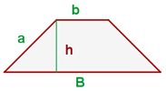

General Area Calculator
Trapecio
A = (B + b)⁄2 · h -> El área es igual al producto de la altura por la mitad de la suma de la base mayor y la base menor.
En geometría, se llama trapecio a un cuadrilátero que tiene dos lados paralelos y otros dos que no lo son. Los lados paralelos se llaman bases del trapecio; y la distancia entre ellos, altura.
Se denomina mediana al segmento que tiene por extremos los puntos medios de los lados no paralelos.